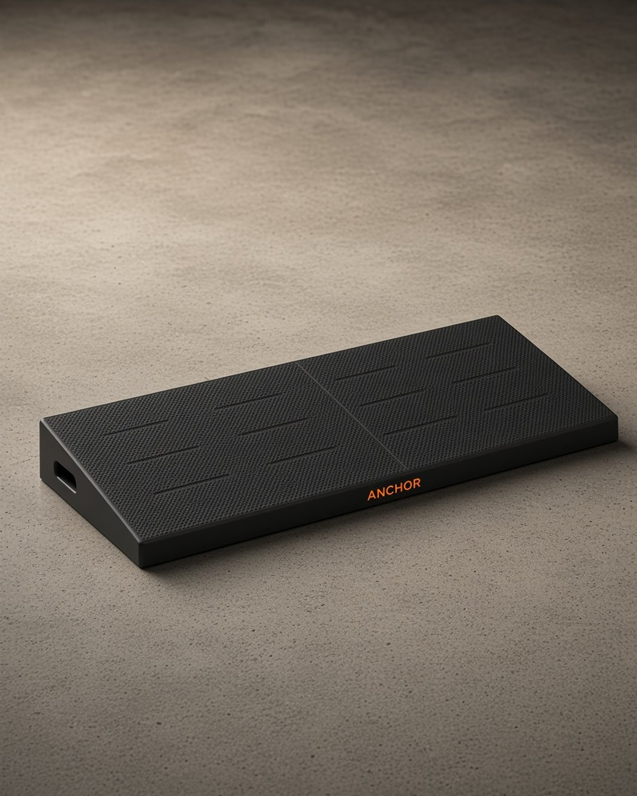

Example ad set for The 1-Page Empire workshop. ANCHOR is fictional.
Step 3 · Ads
ANCHOR Squat Wedge: 8 ad concepts
Each concept is modeled on a real ad that has been running for months in the Meta Ad Library, written in buyers' own review language, and sent to one page.
Angle: “The squat wedge that doesn't move.” $79, grip molded into the rubber, lifetime grip guarantee.
Test first: C1, the founder answering “Why is it $79?”. Price is the #1 objection to a premium wedge, and this format has run 222 days for VelorHealth.
Why it works: It names the buyer's exact doubt in the first line, then turns price into a quality argument from a credible founder, so skeptics keep watching instead of scrolling.
Hooks
“Why does a squat wedge cost $79?” Fair question. Here's the answer.
Most premium wedges are plywood with skateboard tape. Mine isn't.
I got tired of paying for foam that squishes and tape that peels.
If your grip tape has ever “worn completely smooth,” watch this.
Review language: “Why does a few pieces of wood cost $199?” and “a plywood slant board with skateboard tape for grip” (r/Kneesovertoes, ATG review); “the grit has been worn completely smooth” (ATG review).
Meta copy
Primary text (short)
$79 for a squat wedge? Yeah. Here's why: the grip is molded into the rubber, not glued on, so it can't peel, and the hardwood core won't squish under a loaded bar. Lifetime grip guarantee.
Headline
The squat wedge that doesn't move
Description
Grip molded in. Lifetime guarantee.
CTA button
Shop Now
Long primary text
Primary text (long)Meta
I'm Jake, I started ANCHOR in my garage gym.
$79 isn't cheap for a squat wedge. I get it.
But every wedge I owned did one of three things: it slid when I set my feet, it squished under a loaded bar, or the grip tape peeled off. And my size 13s hung off the end.
So here's what $79 gets you:
• A hardwood core over-molded in natural rubber. Rated to 1,000 lb.
• Grip molded into the material, not glued tape. Nothing to peel.
• A full rubber base, so it stays put on the floor.
• 27" long, so both feet stand on it side by side, and 11" deep, to men's size 15.
• About 7 lb, with a carry handle.
And a lifetime grip guarantee. If the grip ever wears out, we replace it.
Buy it once. Squat on it for years.
AI prompts (image 4:5 + video 9:16)
4:5 founder static (used for the sample)Adapted
Photorealistic vertical photo of a fictional founder: a fit man in his early 40s with a short beard, plain black t-shirt with no logos, standing in a tidy home garage gym with a squat rack and plates behind him, holding the long dark charcoal rubber ANCHOR squat wedge horizontally across his waist with a hand on each end, so its full 27" length spans his body. Frame from the chin down (no face) for the sample; for a real founder video, film the real founder face-on. Natural daylight, warm tones, iPhone-style realism. Leave the top third clean. Text overlay (add in design tool): pill “FROM THE FOUNDER”; headline “$79 for a squat wedge? Yeah. Here's why.”; sub “Most wedges are foam with tape glued on. Mine is a hardwood core molded in rubber, so the grip can't peel and it doesn't move.”; bottom bar: ANCHOR logo + “Lifetime grip guarantee”. Aspect 4:5 (also export 9:16). Label: AI-generated person. Use the ANCHOR product photo as a reference image so the product stays accurate: a dark charcoal one-piece rubber squat wedge (15°, 27" long x 11" deep x about 3" tall at the back: long and low, about 2.5 times as long as it is deep, so BOTH feet stand on it side by side at shoulder width with room on each side; never show a narrow single-foot wedge or two feet crammed on a short one), fine molded micro-texture across the whole top, molded foot-guide outlines, a recessed carry handle in each short end, and a small orange ANCHOR logo on the front face.
Video prompt, 9:16Adapted
9:16, 30s, founder-to-camera, handheld iPhone look, garage gym.
0-3s: Close medium shot, founder holds ANCHOR up to camera. On-screen: “Why is this wedge $79?” VO: “You might think $79 is a lot for a squat wedge. It is. Here's why.”
3-8s: Cut to founder dropping a cheap foam wedge on the floor and pressing his thumb into it; it dents. VO: “Most wedges are foam. They squish under a loaded bar.”
8-12s: Macro of a premium plywood board's grip tape peeling at the corner. VO: “The expensive ones are wood with tape glued on. Tape peels.”
12-18s: Macro slow pan across ANCHOR's molded micro-texture; thumb drags across it. On-screen: “Grip molded IN. Not glued on.” VO: “ANCHOR is a hardwood core molded in rubber. The grip is part of the material.”
18-24s: Founder in socks steps on and squats; feet don't move. On-screen: “Socks. Bare feet. Shoes.”
24-30s: Founder to camera holding it by the handle. On-screen: “Lifetime grip guarantee · $79”. VO: “Lifetime grip guarantee. Buy it once.”
Label the founder as AI-generated if he is.
UGC creator script
Creator scriptTimestamps
0-3s HOOK (to camera, holding the wedge): “$79 for a squat wedge? Yeah, I know. Let me show you why.” On screen: “Why is this wedge $79?”
3-10s PROBLEM: (hold up a foam wedge, squeeze it) “Every wedge I owned did one of three things. Squished under the bar… (show tape) the grip tape peeled… or it slid when I set my feet.”
10-18s DISCOVERY: “So I made one with a hardwood core molded in rubber. The grip isn't tape, it's molded into the material. Nothing to peel.” On screen: close-up of texture.
18-25s DEMO: (in socks) set feet, squat 3 reps, look down at feet. “Socks. Didn't move.” On screen: “27" long, both feet, to size 15”.
25-30s OFFER + CTA: “Lifetime grip guarantee. $79. Link's below.” On screen: “The squat wedge that doesn't move.”
ALT HOOKS: (1) “Most premium slant boards are plywood with skateboard tape.” (2) “If your wedge has ever slid under a loaded bar, watch this.” (3) “I'm going to tell you why I charge $79 for a wedge.”
Product: ANCHOR Squat Wedge ($79), a one-piece 15° wedge with a hardwood core over-molded in natural rubber, grip molded in (no tape), full rubber base, 27" x 11" one-piece platform (both feet side by side; 11" deep fits men's size 15), rated 1,000 lb, ~7 lb, lifetime grip guarantee.
Creator: a male lifter aged 30-45 with a home or garage gym who can speak like the founder or an honest reviewer. Calm and credible, not hype.
Deliverables: 2 videos at 30-45s, 9:16, plus 3 alternate hooks filmed separately, plus raw footage.
Must say: “The grip is molded in, not glued on.” “Lifetime grip guarantee.” The price ($79).
Must show: a thumb across the texture (macro), squatting in socks, carrying it by the handle, and the platform length next to a big foot.
Don't: claim it fixes pain or injuries, name or show other brands, or use music with lyrics.
Rights: 12 months of paid usage on Meta, whitelisting/partnership ads allowed, and raw files.
Landing page
Send to the main page. Hook matches reason #1 (“grip built in, not glued on”). Page headline: “7 Reasons Why Home-Gym Lifters Are Switching to ANCHOR”.
233 days active, 11 variations (REP); Rogue's materials ad 834 days: https://www.facebook.com/ads/library/?id=3341265152848141
Why it works: It names the cheap category's flaw first, then proves the difference with materials. Premium buyers get a reason, not just a price. Rogue runs the same mechanism with specs (“11-gauge steel… laser cut in-house”).
Hooks
Most squat wedges slip, squish or peel. ANCHOR is built differently.
Squat wedges should have no give at all. Most do.
“EPP” is a nice way of saying styrofoam.
Your wedge shouldn't slide around while you set your feet with a bar on your back.
Review language: “Squat wedges should have no give at all to it at reasonable weights” (Wolf, 3★); “EPP is short for Styrofoam with a plastic sealant on it” (3/5-set, 3★); “foam wedges that slide around when you're trying to get your feet in place with a heavy ass barbell on your back” (wooden wedge review).
Meta copy
Primary text (short)
Most squat wedges slip, squish or peel. ANCHOR is a hardwood core molded in rubber, with the grip built into the material. It doesn't move.
Headline
Built not to give. Built not to slide.
Description
Hardwood core. Rubber grip. $79.
CTA button
Shop Now
Long primary text
Primary text (long)Meta
Most squat wedges are foam. Under a loaded bar, foam gives.
The premium ones are wood with grip tape glued on. Tape peels. Then it goes smooth.
ANCHOR is built differently:
✓ Hardwood core over-molded in natural rubber, rated to 1,000 lb
✓ Grip molded into the rubber, so there's nothing to peel
✓ Full rubber base, so it stays put on the floor
✓ 27" long for both feet, 11" deep for up to men's size 15
If you're serious about your squat, your wedge should be too.
Lifetime grip guarantee.
AI prompts (image 4:5 + video 9:16)
4:5 comparison static (used for the sample)Adapted
Photorealistic vertical split-screen product comparison with a thin divider. LEFT: a generic unbranded light-blue foam squat wedge with a dented corner, crumbs of foam, and black grip tape peeling up, under cool flat light. RIGHT: the long (27") dark charcoal rubber ANCHOR wedge, clearly more than twice the length of the foam one, pristine, with its molded micro-texture top and orange logo, under warm premium light, at the same three-quarter angle on the same concrete floor. Leave the top 25% empty. Text overlay: headline “Most squat wedges slip, squish or peel.” sub “ANCHOR is built differently.”; labels “Foam + glued tape” vs “ANCHOR”; rows ✕ Compresses under load / ✓ Hardwood core, 1,000 lb; ✕ Tape peels, goes smooth / ✓ Grip molded in, can't peel; ✕ Slides in socks / ✓ Grips socks & bare feet; ✕ Too short for size 13 / ✓ 27" long, fits size 15. Never show a real competitor's brand. 4:5 and 9:16. Use the ANCHOR product photo as a reference image so the product stays accurate: a dark charcoal one-piece rubber squat wedge (15°, 27" long x 11" deep x about 3" tall at the back: long and low, about 2.5 times as long as it is deep, so BOTH feet stand on it side by side at shoulder width with room on each side; never show a narrow single-foot wedge or two feet crammed on a short one), fine molded micro-texture across the whole top, molded foot-guide outlines, a recessed carry handle in each short end, and a small orange ANCHOR logo on the front face.
Video prompt, 9:16Adapted
9:16, 18s, moody product-detail montage, no voiceover, punchy beat (instrumental).
0-2s: Black screen. Text: “Most squat wedges are foam.” Then a hand presses into a generic foam wedge, which dents.
2-5s: Macro of grip tape peeling off a wooden board. Text: “Or tape on wood.”
5-9s: Hard cut to ANCHOR on a dark rubber gym floor under a spotlight; slow dolly-in across the molded texture. Text: “ANCHOR: grip molded in.”
9-13s: A 45 lb plate drops onto ANCHOR from about 30 cm; no bounce, no flex. Text: “Hardwood core. Rated to 1,000 lb.”
13-16s: A lifter steps on in socks and squats deep; feet stay planted. Text: “It doesn't move.”
16-18s: End card: ANCHOR logo, “$79 · Lifetime grip guarantee”.
UGC creator script
Creator scriptTimestamps
0-3s HOOK: (hold a cheap foam wedge in one hand and ANCHOR in the other) “This one squishes. This one doesn't.” On screen: “Most squat wedges slip, squish or peel.”
3-10s PROBLEM: press your thumb into the foam (show it dent), then show a strip of grip tape lifting on any old board. “Foam gives under a bar. Tape peels.”
10-17s THE DIFFERENCE: drag your thumb across ANCHOR's texture. “This is a hardwood core molded in rubber. The grip is in the material.”
17-25s PROOF: bar on your back, set your feet, squat 3 reps. Camera low on your feet. “No give. No slide.”
25-30s CTA: “Lifetime grip guarantee. Link below.”
ALT HOOKS: (1) “Squat wedges should have no give at all.” (2) “Stop squatting on styrofoam.” (3) “Your wedge shouldn't move when you set your feet.”
Product: ANCHOR Squat Wedge ($79), with the specs as in concept 1.
Creator: a home-gym lifter aged 25-45 who back-squats with real weight, ideally with a rack in frame.
Deliverables: 2 videos at 20-30s, 9:16, plus 3 hooks and raw footage. 1 must be wordless with on-screen text only.
Must say or show: “Hardwood core, molded in rubber” and “Grip molded in, not glued on”; a loaded back squat on the wedge with a low camera on the feet; a thumb macro on the texture.
Don't: show or name any competitor brand (use a plain unbranded foam wedge as the “before”), or claim injury prevention.
Rights: 12 months of Meta paid usage, whitelisting, and raw files.
Landing page
Main page. Matches the page reason about foam vs. hardwood core and “doesn't move”.
162 days active, same copy on 25 ads (40 variations); creators: Dr. Caleb Burgess DPT https://www.facebook.com/ads/library/?id=1669546494350203 (162 days), The Kneehaber https://www.facebook.com/ads/library/?id=1015738987496905 (161 days)
Why it works: A wordless demo works muted and answers “what does it do?” in seconds. Creators add trust for different audiences. Scaling one concept across 25 ads is the strongest working signal we found.
Hooks
Socks. Bare feet. Shoes. It doesn't move.
Watch my feet. (on-screen only)
5 ways I use one squat wedge with every client.
Every single day I see clients who can't hit depth. This fixes the setup.
Review language: “every single day I come across people who just don't have the mobility to work on squats” (personal trainer, Wolf review); 24 barefoot/sock items, 15 complaining about slipping (ANGLES.md).
Meta copy
Primary text (short)
Socks. Bare feet. Shoes. The ANCHOR Squat Wedge doesn't move. The grip is molded into the rubber, not glued on.
Headline
Socks. Bare feet. Shoes. It doesn't move.
Description
Grip molded in, not glued on.
CTA button
Shop Now
Long primary text
Primary text (long)Meta
Watch the feet.
Socks, bare feet, lifting shoes. A loaded bar. A size-15 foot. ANCHOR doesn't move.
That's because the grip isn't tape. It's molded into the rubber, over a solid hardwood core, on a full rubber base.
• 15° one-piece wedge
• 27" x 11" one-piece platform: both feet side by side, up to men's size 15
• Rated to 1,000 lb, about 7 lb with a carry handle
• Lifetime grip guarantee
AI prompts (image 4:5 + video 9:16)
4:5 sock-grip close-up (used for the sample)Adapted
Photorealistic low-angle close-up at floor level: two feet in grey athletic socks planted side by side at shoulder width on the sloped top of the one long (27") dark charcoal rubber ANCHOR squat wedge, empty wedge visible beyond each foot, heels on the raised back edge, the molded micro-texture sharply visible under the socks. Garage-gym concrete floor, warm side light, shallow depth of field. Text overlay at top over a dark gradient: “Socks. Bare feet. Shoes.” then, in orange, “It doesn't move.”; sub “Grip molded into the rubber, not glued on. Lifetime grip guarantee.” 4:5 and 9:16. Use the ANCHOR product photo as a reference image so the product stays accurate: a dark charcoal one-piece rubber squat wedge (15°, 27" long x 11" deep x about 3" tall at the back: long and low, about 2.5 times as long as it is deep, so BOTH feet stand on it side by side at shoulder width with room on each side; never show a narrow single-foot wedge or two feet crammed on a short one), fine molded micro-texture across the whole top, molded foot-guide outlines, a recessed carry handle in each short end, and a small orange ANCHOR logo on the front face.
Video prompt, 9:16Adapted
9:16, 14s, wordless, seamless light-grey studio, music only, fast cuts (Nordstick style).
0-2s: Top text “WHAT CAN'T IT GRIP?” Camera at foot level; a socked foot steps onto ANCHOR.
2-4s: Bare foot steps on, wiggles, stays put. Text “Bare feet ✓”.
4-6s: Lifting shoe steps on. Text “Shoes ✓”.
6-9s: Both feet at shoulder width on the 27" wedge, then a size-15 foot fitting fully front to back; a tape measure pulled alongside. Text “27" long · up to size 15 ✓”.
9-12s: Wide shot: barbell back squat in socks, deep, feet stay planted. Text “Loaded bar ✓”.
12-14s: End card: ANCHOR, “The squat wedge that doesn't move.”
UGC creator script
Creator scriptTimestamps
CREATOR VERSION (PT or coach, 30-40s):
0-3s HOOK: “Five ways I use one squat wedge with every client.” On screen: “5 ways”.
3-8s #1 Heel-elevated goblet squat: “For anyone whose heels lift at the bottom.”
8-13s #2 Slant split squat: “Front foot on the wedge, deep knee bend.”
13-18s #3 Calf stretch: “Toes up, 30 seconds, socks are fine because it grips.”
18-24s #4 Barefoot set-up: “Clients train barefoot here. It doesn't slide.” (show a sock foot)
24-30s #5 Big feet: “My size-14 clients finally fit.” (show the full foot on the platform)
30-35s CTA: “It's the ANCHOR wedge. Grip's molded in, lifetime guarantee. Link below.”
ALT HOOKS: (1) “Every day I see clients who can't hit depth.” (2) “Watch their feet, not the squat.” (3) “The one wedge I keep in my clinic bag.”
Product: ANCHOR Squat Wedge ($79), with the specs as in concept 1.
Creator: a credentialed personal trainer, coach or physical therapist (real credentials only, shown honestly) who trains clients, plus 1 lifestyle demo creator for the wordless version.
Deliverables: 1 “5 ways” video at 30-40s, plus 1 wordless demo at 12-15s (no talking; we add text), plus 3 hooks and raw footage. All 9:16.
Must show: socks and bare feet on the wedge, a size-13+ foot fitting fully, and carrying it by the handle between stations.
Must say: “It doesn't move” and “grip's molded in.”
Don't: diagnose, promise rehab outcomes or pain relief, or wear visible brand logos.
Rights: 12 months of Meta paid usage, partnership/whitelisted ads from the creator's handle, and raw files.
Landing page
Main page. The “It doesn't move” demo matches the page's first reason. For the PT version, point to the page section on trainers and big feet.
Gymreapers: 105 days, 7 ads with the same copy. Infraredi (Ad Magnet digest, poster's claim): “Stiff again” Notes static, $8,119 spend at 6.01x ROAS, https://x.com/helloitsdrew_/status/2120861183788142677
Why it works: Post-like statics skip ad blindness and are cheap to make in many variations. The digest notes Notes-style statics staying live for 476+ days (Breeze).
Hooks
why i made a $79 squat wedge
every wedge I bought did one of three things…
things I'm done with: foam wedges, peeling grip tape, size 13s hanging off the end
my heels would lift like they were trying to escape the floor
Review language: “my heels would lift like they were trying to escape the floor” (Wolf review); slipping is the #1 complaint, cheap material #2 and peeling tape #3 (ANGLES.md).
Meta copy
Primary text (short)
I wrote this at midnight after my third squat wedge failed. So I built one that doesn't move.
Headline
Why I made a $79 squat wedge
Description
It doesn't move. Lifetime grip guarantee.
CTA button
Learn More
Long primary text
Primary text (long)Meta
I wrote this note the night I gave up on my third squat wedge.
The first one slid. The second squished. The third one's grip tape peeled off in three months.
So I built ANCHOR: a hardwood core molded in rubber, with the grip built into the material. Full rubber base. Fits up to size 15.
I squatted in socks the day the first one arrived. It didn't move once.
Lifetime grip guarantee. $79.
AI prompts (image 4:5 + video 9:16)
4:5 Notes staticAdapted
Build in a design tool, not AI (text must be exact): an iPhone Notes screenshot, off-white background, status bar “9:41”, yellow “‹ Notes” and “Done”, grey timestamp “November 19, 2026 at 11:48 PM”, bold title “why i made a $79 squat wedge”, body in system font: “every wedge I bought did one of three things: / 1. slid when I set my feet / 2. squished under a loaded bar / 3. the grip tape peeled off / and my size 13s hung off the end. / so: hardwood core, molded in rubber. the grip is IN the material. nothing to peel. / squatted in socks today. it didn't move once. / — Jake, founder (ANCHOR)”. No product photo needed. Variant: add a small product photo pasted into the note as an attachment. 4:5 and 9:16.
Video prompt, 9:16Adapted
9:16, 12s, screen-recording style.
0-3s: Phone screen, Notes app opens, title types out: “why i made a $79 squat wedge”.
3-9s: Lines type out one by one (slid / squished / tape peeled / size 13s hung off).
9-11s: Cut to real footage: socked feet squatting on ANCHOR, no movement.
11-12s: Text “It doesn't move. $79 · lifetime grip guarantee.”
UGC creator script
Creator scriptTimestamps
UGC VERSION (creator reads their own note, 20-25s):
0-3s HOOK: (phone in hand, showing Notes) “I keep a note of every piece of gym gear that let me down.”
3-12s PROBLEM: scroll: “Squat wedge number one slid. Number two squished. Number three, the grip tape peeled.”
12-18s DISCOVERY + DEMO: put the phone down, step onto ANCHOR in socks, squat. “This one has the grip molded into the rubber.”
18-24s RESULT + CTA: look at feet. “Didn't move. It's off the list.” On screen: “ANCHOR · lifetime grip guarantee”.
ALT HOOKS: (1) “Things I'm done buying:” (2) “My heels used to lift like they were trying to escape the floor.” (3) “I've bought four squat wedges. Here's why.”
Product: ANCHOR Squat Wedge ($79), with the specs as in concept 1.
Creator: a relatable home-gym lifter aged 25-45, casual on-camera style.
Deliverables: 1 video at 20-25s, 9:16, plus 3 hooks, raw footage, and 3 vertical stills of their own phone notes (we design the final static).
Must show: a phone with the note, a sock squat on the wedge, and the feet not moving.
Must say: “grip molded into the rubber.”
Don't: name other brands in the note (say “wedge #1”), or claim the wedge fixed an injury.
Rights: 12 months of Meta paid usage and raw files.
Landing page
Main page. The note mirrors the page's reasons 1-3 (no slip, no squish, no peeling).
Why it works: It frames a higher price as a one-time investment and proves it with a simple test the viewer can see. Our test is the weight test.
Hooks
In my opinion, this is the last squat wedge you'll ever buy.
I felt my old wedge compress at 275. Watch this one.
Rated to 1,000 lb. Let's test it.
Squat wedges should have no give at all. This one has none.
Review language: “I felt it compressing when squatting 275lb… Squat wedges should have no give at all” (Wolf, 3★); “No warping with my heavy (320lb) client” (therapy gym review).
Meta copy
Primary text (short)
Rated to 1,000 lb. Zero give. Zero slide. The last squat wedge you'll buy, with a lifetime grip guarantee.
Headline
Rated to 1,000 lb. Zero give.
Description
The last squat wedge you'll buy.
CTA button
Shop Now
Long primary text
Primary text (long)Meta
I felt my old wedge compress under 275.
So I tested this one: plates stacked on it, then a heavy back squat on it.
No flex. No slide. No grip tape to peel.
ANCHOR is a hardwood core molded in natural rubber, rated to 1,000 lb, with the grip built into the material and a full rubber base. It still weighs only about 7 lb, so it goes in your gym bag.
Lifetime grip guarantee. $79, once.
AI prompts (image 4:5 + video 9:16)
4:5 load static (used for the sample)Adapted
Photorealistic vertical action photo in a home garage gym: a strong lifter in his 30s at the bottom of a deep high-bar back squat with a heavily loaded barbell (black bumper plates, no logos), torso upright, both feet at shoulder width with heels elevated on the one long (27") dark charcoal rubber ANCHOR wedge, which sits flat and stable on rubber flooring. Low side camera so the wedge and orange logo are clear. Dramatic warm side light. Text overlay at top over a gradient: “Rated to 1,000 lb.” / orange “Zero give. Zero slide.” / “The last squat wedge you'll buy. $79.” Label: AI-generated image. 4:5 and 9:16. Use the ANCHOR product photo as a reference image so the product stays accurate: a dark charcoal one-piece rubber squat wedge (15°, 27" long x 11" deep x about 3" tall at the back: long and low, about 2.5 times as long as it is deep, so BOTH feet stand on it side by side at shoulder width with room on each side; never show a narrow single-foot wedge or two feet crammed on a short one), fine molded micro-texture across the whole top, molded foot-guide outlines, a recessed carry handle in each short end, and a small orange ANCHOR logo on the front face.
Video prompt, 9:16Adapted
9:16, 25s, creator review in a garage gym.
0-3s: Creator to camera: “In my opinion, this is the last squat wedge you'll buy.” Text: “Load test.”
3-8s: Stack 45 lb plates one by one on ANCHOR; macro on the edge showing no compression. Text counts “45… 90… 135… 180 lb”.
8-12s: Side-by-side: thumb into a generic foam wedge (dents) vs. thumb on ANCHOR (doesn't).
12-20s: Heavy back squat, 3 reps, low camera on the feet. Text: “Zero give. Zero slide.”
20-25s: Creator carries it by the handle: “And it's 7 pounds.” End card: “Rated to 1,000 lb · Lifetime grip guarantee · $79”.
UGC creator script
Creator scriptTimestamps
0-3s HOOK: “In my opinion, this is the last squat wedge you'll ever buy.”
3-10s PROBLEM: “My old foam one? I felt it compress at 275.” (press a foam wedge; it dents)
10-18s PROOF: stack plates on ANCHOR and show the edge at macro. “Hardwood core, molded in rubber. Rated to 1,000.”
18-26s DEMO: heavy squat for 3 reps with the camera on the feet. “No give. No slide.”
26-32s CTA: carry it by the handle. “Seven pounds, lifetime grip guarantee. Link below.”
ALT HOOKS: (1) “Rated to 1,000 lb. Let's test that.” (2) “Squat wedges should have zero give.” (3) “I put 180 lb of plates on a squat wedge.”
Product: ANCHOR Squat Wedge ($79), with the specs as in concept 1.
Creator: a strength-focused lifter (squats 225+) with a garage or home gym and safety bars set.
Deliverables: 1 review at 25-35s, 9:16, plus 3 hooks and raw footage of the plate stack and squat from 2 angles.
Must show: the plate stack with a macro of the edge, a heavy squat with a low camera on the feet, and carrying it by the handle.
Must say: “Rated to 1,000 lb” and “grip's molded in.”
Safety: use safety arms in the rack; never stand on the stacked plates.
Don't: name other brands, or use the word “indestructible.”
Rights: 12 months of Meta paid usage, whitelisting, and raw files.
Landing page
Main page, the reason about the solid core and 1,000 lb rating.
Why it works: The comment-reply sticker feels native and starts mid-conversation. Taking the blame off the buyer makes starting feel safe. We keep it to comfort and form, not cause or cure.
Hooks
Replying to “my knees could never”: try raising your heels.
I'm 58 and squats feel easier now. Here's the setup.
As I've gotten older, deep squats started to bother me. This changed how they feel.
Easing back into squats? Start with your heels up.
Review language: “As I've gotten older, squatting sometimes bothered my knee. With this wedge, I do not feel any pressure on my knees” (Wolf review); “I'm 6 months postpartum and easing my way back into squats” (Wolf review); “I am a 67 year old female that strength trains” (EPP review).
Meta copy
Primary text (short)
Squats that feel easier on your knees. Heels up, chest up, on a wedge that doesn't wobble or slide. 7 lb with a carry handle.
Headline
Squats that feel easier on your knees
Description
Stable, grippy, 7 lb. Lifetime grip guarantee.
CTA button
Learn More
Long primary text
Primary text (long)Meta
Someone commented “my knees could never.” Here's what I'd tell them.
Raising your heels changes how a squat feels. You sit straight down, chest up, without forcing your ankles.
But it only works if the wedge is stable. Mine used to slide on the floor and wobble under me.
ANCHOR has a full rubber base and grip molded into the top, so it stays put, even in socks. It's 7 lb with a handle, so I move it from the living room to the bedroom.
Start easy, go at your own pace, and check with your doctor or physical therapist if you have an injury.
AI prompts (image 4:5 + video 9:16)
4:5 comfort static (used for the sample)Adapted
Photorealistic UGC-style phone photo: a fit, smiling woman in her late 50s with short grey hair, plain leggings and t-shirt, doing a light goblet squat holding a kettlebell in her living room, both feet at shoulder width with heels on the raised back edge of the one long (27") dark charcoal ANCHOR wedge, torso upright, comfortable and confident. Warm window light. Text card top-right: “Squats that feel easier on your knees.” / “Heels up, chest up, on a base that doesn't wobble. 7 lb, carry handle.” Label: AI-generated person. No logos on the kettlebell. 4:5 and 9:16. Use the ANCHOR product photo as a reference image so the product stays accurate: a dark charcoal one-piece rubber squat wedge (15°, 27" long x 11" deep x about 3" tall at the back: long and low, about 2.5 times as long as it is deep, so BOTH feet stand on it side by side at shoulder width with room on each side; never show a narrow single-foot wedge or two feet crammed on a short one), fine molded micro-texture across the whole top, molded foot-guide outlines, a recessed carry handle in each short end, and a small orange ANCHOR logo on the front face.
Video prompt, 9:16Adapted
9:16, 25s, selfie UGC in a living room, natural light, with a TikTok-style “Reply to comment” sticker that reads “my knees could never”.
0-3s: A woman (55-65) talks to the camera, holding ANCHOR: “Replying to ‘my knees could never’: try raising your heels.”
3-8s: Side view: a bodyweight squat flat-footed (she stops shallow), then on ANCHOR (she sits deeper, chest up). Text: “Heels up = chest up.”
8-14s: Close-up: socked feet on the wedge; she shifts her weight and nothing moves. VO: “It doesn't slide, even in socks.”
14-20s: She carries it by the handle to another room. Text: “7 lb · carry handle”.
20-25s: To camera: “Start easy. Go at your own pace.” End card: “ANCHOR · Lifetime grip guarantee”.
Label the woman as an AI-generated person if AI is used.
UGC creator script
Creator scriptTimestamps
0-3s HOOK: (comment-reply sticker: “my knees could never”) “Okay, replying to this one. Try raising your heels.”
3-10s PROBLEM: “Flat-footed, I can't get very low without leaning forward.” (show a shallow squat)
10-17s DISCOVERY + DEMO: step on ANCHOR and squat slowly. “Heels up, I can sit straight down. It just feels easier.”
17-23s TRUST: look at feet. “What I care about is it doesn't move. It doesn't slide or wobble, even in socks.”
23-30s CTA: “Seven pounds, it lives under my couch. Link's below. Go at your own pace.”
ALT HOOKS: (1) “I'm 58 and squats feel easier now.” (2) “Easing back into squats after a baby? Heels up.” (3) “The 2-minute squat setup I wish I'd found at 50.”
Product: ANCHOR Squat Wedge ($79), with the specs as in concept 1.
Creator: a real person aged 50-70, or a postpartum mom, who already does light strength training at home. Warm, honest, not a fitness influencer look.
Deliverables: 2 videos at 25-35s, 9:16, using the “reply to comment” format, plus 3 hooks and raw footage.
Must show: a slow squat on the wedge, a side view showing an upright chest, a socked-foot close-up, and carrying it by the handle.
Must say: “It feels easier,” “It doesn't move,” and “Go at your own pace.”
Don't: say it heals, fixes, treats, prevents or relieves any injury or condition; mention surgery outcomes; or say “your bad knees” (Meta personal-attribute rule).
Rights: 12 months of Meta paid usage, whitelisting, and raw files.
Landing page
Main page. If a persona page for 50+ is built later, send this ad there (headline idea: “6 Reasons Why Adults Over 50 Are Switching to ANCHOR for Easier Squats”).
180 days active; also The Foot Collective's slant-board kit, 159 days: https://www.facebook.com/ads/library/?id=1019930057151080
Why it works: One simple, everyday-use demo kept running for 6 months from a tiny page. That is a cheap, durable format. We flip their “cheapest” angle to “the one that grips your socks.”
Hooks
Stand on it while the coffee brews.
I keep one by my standing desk and stretch while I work.
Your PT's slant board, at home. And it grips your socks.
Tight calves after a run? 2 minutes on this while you scroll.
Review language: “I stand on them while waiting for the kettle, taking my meds, eating my breakfast” (r/PlantarFasciitis); “makes it easier to do anywhere… working at my standing desk” (r/PlantarFasciitis); “similar to the wooden wedge in my physical therapist's office” (EPP review).
Meta copy
Primary text (short)
Stand on it while the coffee brews. ANCHOR grips socks and bare feet, so your daily calf stretch doesn't slide across the floor.
Headline
Stand on it while the coffee brews
Description
Grips socks. Stays put. 7 lb.
CTA button
Shop Now
Long primary text
Primary text (long)Meta
The easiest stretch habit: stand on it while you do something else.
Waiting for the coffee. At your standing desk. After a run.
Most wedges are slick in socks and creep across the floor. ANCHOR has grip molded into the rubber and a full rubber base, so it stays where you put it, even on hardwood.
15°, 27" long so both feet fit side by side, 7 lb with a carry handle. Lifetime grip guarantee.
AI prompts (image 4:5 + video 9:16)
4:5 desk static (used for the sample)Adapted
Photorealistic lifestyle phone photo: a woman in her 40s in casual work-from-home clothes and plain white socks at a standing desk with a laptop and coffee mug, both feet side by side on the one long (27") dark charcoal ANCHOR wedge, room to spare on each side, for a gentle calf stretch. Bright home office, morning window light, candid UGC feel. Text card at top on white: “Stand on it while the coffee brews.” / “A daily calf stretch at your desk, on a wedge that grips your socks and won't creep across the floor.” Label: AI-generated person. 4:5 and 9:16. Use the ANCHOR product photo as a reference image so the product stays accurate: a dark charcoal one-piece rubber squat wedge (15°, 27" long x 11" deep x about 3" tall at the back: long and low, about 2.5 times as long as it is deep, so BOTH feet stand on it side by side at shoulder width with room on each side; never show a narrow single-foot wedge or two feet crammed on a short one), fine molded micro-texture across the whole top, molded foot-guide outlines, a recessed carry handle in each short end, and a small orange ANCHOR logo on the front face.
Video prompt, 9:16Adapted
9:16, 15s, text-overlay demo, soft acoustic music, no voiceover.
0-3s: Kitchen; a coffee machine starts. A socked foot slides ANCHOR out from under the counter with a toe. Big caption: “Stand on it while the coffee brews.”
3-7s: Both socked feet on the wedge for a calf stretch; macro of the socks on the texture. Caption: “Grips socks. No sliding.”
7-11s: Cut to a standing desk, typing while stretching. Caption: “Or at your desk.”
11-13s: Carry it by the handle. Caption: “7 lb · carry handle”.
13-15s: End card: “ANCHOR · Lifetime grip guarantee”.
UGC creator script
Creator scriptTimestamps
0-3s HOOK: (in the kitchen, in socks) “My new rule: I stand on this while the coffee brews.”
3-9s PROBLEM: “My old stretch wedge slid every time I stood on it in socks. On hardwood it would just creep.”
9-16s DEMO: stand on ANCHOR, then a macro of the socks on the texture. “This one has the grip molded into the rubber. It doesn't move.”
16-22s ROUTINE: carry it to the desk. “Then it comes to my desk for a few minutes between calls.”
22-27s CTA: “It's the ANCHOR wedge. Link's below.”
ALT HOOKS: (1) “Your physical therapist's slant board, but it grips socks.” (2) “Two-minute calf stretch while you scroll.” (3) “I keep this by my standing desk.”
Product: ANCHOR Squat Wedge ($79), with the specs as in concept 1. Used here as a calf-stretch wedge.
Creator: a runner, standing-desk worker or someone who does home stretching, aged 30-60, with an everyday home setting.
Deliverables: 2 videos at 15-30s, 9:16 (1 with talking, 1 text-overlay only), plus 3 hooks and raw footage.
Must show: socks on hardwood with no sliding, the kitchen and desk routine, and carrying it by the handle.
Must say: “It grips my socks” and “It doesn't move.”
Don't: claim it treats plantar fasciitis, heel pain or any condition (say “stretch” and “feels good”), or show other brands.
Rights: 12 months of Meta paid usage, whitelisting, and raw files.
Landing page
Main page, the section on the calf stretch and everyday use. Later, a calf-stretcher persona page (headline idea: “7 Reasons Why Runners and Desk Workers Are Switching to ANCHOR for Their Daily Calf Stretch”).
Expert/podcast clip: “There's a guy who made a wedge that doesn't move”

Product photo only (AI-generated example product). Needs a REAL clip to run.
Persona
P5 Knees-Over-Toes follower and P4 trainer/PT
Angle
The coach-approved wedge that fits big feet and doesn't move
Format
Real podcast/interview clip with captions (9:16, 20-40s)
Book a real coach or PT on a small podcast or live interview, ask them what they look for in a wedge, and clip their honest answer about grip, big feet and stability.
Why it works: Borrowed authority from a real third-party voice, plus a 15-second explanation of the category. It has run for almost two years. The digest's Young Goose podcast clip (355 days) confirms the format.
Hooks
There's a guy who made a squat wedge with the grip molded in.
The #1 thing I look for in a slant board: it can't move.
If you're over a size 9, most wedges are useless. Here's why.
Why are people paying $199 for wood with tape on it?
Review language: “DO NOT BUY IF YOU HAVE SIZE 9 MENS SHOES OR HIGHER. I follow knees over toes program” (Wolf, 1★); “Any shoe size over 10 will cause the big toe to be on the floor… make the exercise useless” (PT, Wolf 1★); “Why does a few pieces of wood cost $199?” (r/Kneesovertoes).
Meta copy
Primary text (short)
What a coach looks for in a squat wedge: it fits your whole foot, and it doesn't move. ANCHOR: 27" long, both feet, to size 15, grip molded in.
Headline
Fits your whole foot. Doesn't move.
Description
27" long, to size 15. $79.
CTA button
Learn More
Long primary text
Primary text (long)Meta
We asked a strength coach what makes a squat wedge good.
His answer: two things. Your whole foot has to fit, and it can't move.
Most wedges fail one or both. Short ones leave big toes on the floor. Taped ones go smooth. Foam ones slide.
ANCHOR: 27" x 11" one-piece platform (both feet side by side, up to men's size 15), grip molded into the rubber, full rubber base, rated to 1,000 lb.
Lifetime grip guarantee.
AI prompts (image 4:5 + video 9:16)
4:5 quote-card staticAdapted
Vertical 4:5 podcast quote card: a dark studio frame with a real guest's photo (supplied, with permission) wearing headphones at a mic, burned-in caption style text in white with one word highlighted in orange: “The #1 thing I look for in a wedge? It can't MOVE.” Lower third: guest name and real credential. Small ANCHOR product shot bottom-right. Never use a real celebrity without a license. Use the ANCHOR product photo as a reference image so the product stays accurate: a dark charcoal one-piece rubber squat wedge (15°, 27" long x 11" deep x about 3" tall at the back: long and low, about 2.5 times as long as it is deep, so BOTH feet stand on it side by side at shoulder width with room on each side; never show a narrow single-foot wedge or two feet crammed on a short one), fine molded micro-texture across the whole top, molded foot-guide outlines, a recessed carry handle in each short end, and a small orange ANCHOR logo on the front face.
Video prompt, 9:16Adapted
9:16, 30s, REAL footage only (no AI person posing as a real expert). Vertical crop of a podcast or interview, guest centered, with bold word-by-word captions (white, key words orange).
0-3s: Guest: “There's this wedge where the grip is molded into the rubber.”
3-15s: Guest explains what matters: whole-foot fit and no movement; B-roll of ANCHOR with a size-14 foot and socks.
15-25s: B-roll of a slant split squat and a heel-elevated squat on ANCHOR.
25-30s: End card: ANCHOR, “27" one-piece platform · grip molded in · lifetime grip guarantee”.
UGC creator script
Creator scriptTimestamps
INTERVIEW QUESTIONS (to get a natural 30s clip from a real coach or PT):
Q1 (0-3s hook): “What's the first thing you check on a squat wedge?” Target answer: “That it can't move.”
Q2 (3-15s): “What goes wrong with most of them?” Target: short platforms, slippery tops, tape that wears smooth.
Q3 (15-25s): hand them ANCHOR on camera: “What do you notice?” Let them react honestly (texture, length, weight).
Q4 (25-30s): “Who would you give this to?” Target: clients with big feet, people who train in socks.
Then add on-screen text and the CTA in editing: “ANCHOR · link below.”
ALT HOOKS: (1) “If you're over a size 9, most wedges don't work.” (2) “Why are people paying $199 for wood with tape?” (3) “A coach's honest take on squat wedges.”
Product: ANCHOR Squat Wedge ($79), with the specs as in concept 1.
Creator: a real strength coach, ATG-style trainer or physical therapist with a podcast, YouTube or live format. Real credentials only.
Deliverables: 1 full unscripted interview segment (5-10 min) with the guest handling the product, which we clip into 3 vertical ads of 20-40s, plus 3 standalone hook takes.
Must show: the guest handling ANCHOR and a size-13+ foot on it.
Must say: their honest opinion (no forced lines). Disclose the paid partnership (#ad).
Don't: use a celebrity clip without a license, use an AI person as an expert, or make treatment claims.
Rights: 12 months of Meta paid usage plus clip rights for the interview.
Landing page
Main page, the section on platform length and big feet. A future ATG/trainer persona page could carry the coach quote at the top.
Most premium wedges are plywood with skateboard tape. Mine isn't.
I got tired of paying for foam that squishes and tape that peels.
C2 Us vs. them comparison
Most squat wedges slip, squish or peel.
Squat wedges should have no give at all. Most do.
C3 Wordless demo “It doesn't move”
Socks. Bare feet. Shoes. It doesn't move.
Watch my feet. (on-screen only)
C4 Notes static
why i made a $79 squat wedge
every wedge I bought did one of three things…
C7 Calf stretch at your desk
Stand on it while the coffee brews.
I keep one by my standing desk and stretch while I work.
How to run it
Use one campaign (Advantage+ or ABO), with 5 ad sets, one per concept, and an equal daily budget for each (e.g. $30-50 per concept per day). Put 2-3 hook variants of the same body in each ad set.
Run 7 days or until each concept has spent about 2-3x the product price ($160-240) before judging.
Judge on cost per purchase and revenue per visitor on https://pages.mattc.com/pages/squat-wedge/. Look at hook rate (3s views/impressions) and CTR only to choose between hooks.
Round 2: put the budget behind the winning concept, film 3 new hooks for it (same body), and launch C5 (load test) and C6 (comment-reply) as challengers. C8 runs only once a real expert clip is filmed.
Every ad points to the same page. The page headline “7 Reasons Why Home-Gym Lifters Are Switching to ANCHOR” and reason #1 (“doesn't move”) match the main angle in every hook.
Compliance notes
ANCHOR, its founder “Jake” and all product specs are fictional examples for the workshop. A real brand must use only its own true specs, prices, guarantees and reviews.
The quoted review language comes from real reviews of OTHER products (Amazon, Reddit, Rogue, ATG). It is research into how buyers talk. Never present it as an ANCHOR review or testimonial.
No injury, pain-relief or treatment claims. Use comfort and form words (“feels easier on my knees,” “stay upright,” “stretch,” “stable”). Avoid “fixes,” “heals,” “prevents injury,” “relieves plantar fasciitis,” and before/after pain claims.
Meta's personal-attributes rule: don't assert the viewer's condition (“your bad knees,” “your plantar fasciitis”). Speak about the creator's own experience or the product.
Label AI-generated people as AI-generated (the samples carry a label), and never present an AI person as a real customer, founder or expert. Concept 8 must use a real expert with real credentials and a paid-partnership disclosure.
Model structure, not assets: no other brand's footage, words, logos or trademarks. The comparison uses a generic unbranded foam wedge.
Claims that need proof before a real launch: “rated to 1,000 lb” (load test documentation), “lifetime grip guarantee” (written terms on the page), and “fits up to men's size 15” (measured).
No offer or discount codes are used in these examples. If a launch offer is added, create the matching codes in the store first and put the same terms on the page.